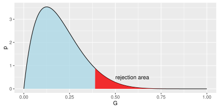
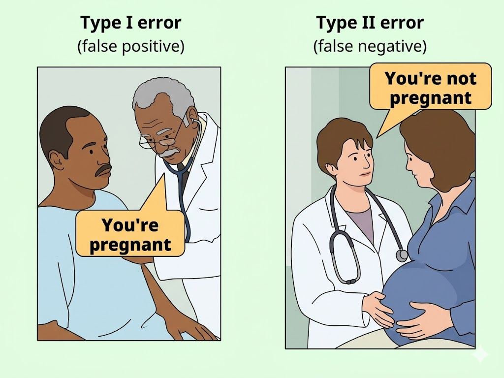

6 Kiểm định giả thuyết thống kê
Kiểm định giả thuyết thống kê là một dạng suy diễn thống kê. Đây là một phương pháp quan trọng cho phép giải quyết nhiều vấn đề trong thực tế. Nội dung của kiểm định giả thuyết thống kê là dựa vào dữ liệu thu thập từ mẫu để ra quyết định bác bỏ hay chấp nhận giả thuyết về tổng thể.
6.1 Các bước trong thủ tục kiểm định giả thuyết thống kê
Một thủ tục kiểm định giả thuyết thống kê bao gồm các bước sau:
- Phát biểu giả thuyết không đúng \(H_{0}\) và đối thuyết \(H_{a}\).
- Từ tổng thể nghiên cứu lập mẫu ngẫu nhiên kích thước \(n\). Chọn tiêu chuẩn kiểm định \(G\) và xác định quy luật phân phối xác suất của \(G\) với giả định giả thuyết \(H_{0}\) là đúng.
- Với mức ý nghĩa \(\alpha\), xác định miền bác bỏ giả thuyết \(H_{0}\).
- Bác bỏ \(H_{0}\) nếu giá trị kiểm định thuộc miền bác bỏ.
Trong thực hành, tiêu chuẩn kiểm định \(G\) thường dựa trên các phân phối như: \(z\) (phân phối chuẩn), \(t\) (phân phối Student), \(\chi^{2}\) (phân phối Chi-squared) và \(F\) (phân phối Fisher).

Trong thực hành tính toán thống kê ngày nay, người ta hay sử dụng thủ tục sau:
- Tính giá trị kiểm định (ví dụ: \(z\) hoặc \(t,\) \(q\))
- Tính giá trị xác suất \(p\)-value tương ứng với giá trị kiểm định tính ở bước 1
- Bác bỏ \(H_{0}\) nếu \(p\)-value < \(\alpha\) với \(p\text{-value} = p(\mathcal{D} | H_{0})\), với giả định \(H_{0}\) là đúng và \(\alpha\) là mức ý nghĩa, \(\mathcal{D}\) là dữ liệu quan sát.
Sai lầm loại I và II
Khi đưa ra quyết định về chấp nhận hay bác bỏ một giả thuyết có thể chúng ta quyết định đúng hoặc sai. Bảng sau tóm tắt các tình huống
| Thực tế | chấp nhận \(H_{0}\) | bác bỏ \(H_{0}\) |
|---|---|---|
| \(H_{0}\) đúng | Quyết định đúng | Sai lầm loại I |
| \(H_{0}\) sai | Sai lầm loại II | Quyết định đúng |

Diễn giải bằng ví dụ xét nghiệm bệnh:
- \(H_{0}\): “Người này không bị bệnh”
- Bác bỏ \(H_{0}\): kết luận “có bệnh”
| Thực tế | chấp nhận \(H_{0}\) | bác bỏ \(H_{0}\) |
|---|---|---|
| Thực sự không bệnh | Quyết định đúng | False Positive |
| Thực sự có bệnh | False Negative | Quyết định đúng |
- Sai lầm loại I (\(\alpha\)): báo động giả \(\to\) thấy hiệu ứng dù không có.
- Sai lầm loại II (\(\beta\)): bỏ sót \(\to\) có hiệu ứng nhưng không phát hiện.
- Power = \(1 - \beta\): khả năng phát hiện hiệu ứng khi nó thực sự tồn tại.
6.2 Kiểm định tham số
Kiểm định một tham số, một tổng thể, một mẫu
Trung bình tổng thể
Biết phương sai tổng thể \(\sigma\) và mức ý nghĩa \(\alpha\)
Kiểm định hai phía
- Giả thuyết không \(H_{0}:\mu=\mu_{0}\) và đối thuyết \(H_{a}:\mu\neq\mu_{0}\)
- Tính \(z\) \[z=\frac{\bar{x}-\mu_{0}}{\sigma/\sqrt{n}}\]
- Miền bác bỏ \[|z|>z\left(\frac{\alpha}{2}\right)\]
Kiểm định phía phải
- Giả thuyết không \(H_{0}:\mu=\mu_{0}\) và đối thuyết \(H_{a}:\mu>\mu_{0}\)
- Tính \(z\)
- Miền bác bỏ \[z>z(\alpha)\]
Kiểm định phía trái
- Giả thuyết không \(H_{0}:\mu=\mu_{0}\) và đối thuyết \(H_{a}:\mu<\mu_{0}\)
- Tính \(z\)
- Miền bác bỏ \[z<-z(\alpha)\]
Trung bình tổng thể
Không biết phương sai tổng thể
Kiểm định hai phía
- Giả thuyết không \(H_{0}:\mu=\mu_{0}\) và đối thuyết \(H_{a}:\mu\neq\mu_{0}\)
- Tính \(t\) \[t=\frac{\bar{x}-\mu_{0}}{s/\sqrt{n}}\]
- Miền bác bỏ \[|t|>t\left(\frac{\alpha}{2};n-1\right)\]
- Giả thuyết không \(H_{0}:\mu=\mu_{0}\) và đối thuyết \(H_{a}:\mu\neq\mu_{0}\)
Kiểm định phía phải
- Giả thuyết không \(H_{0}:\mu=\mu_{0}\) và đối thuyết \(H_{a}:\mu>\mu_{0}\)
- Tính \(t\)
- Miền bác bỏ \[t>t(\alpha;n-1)\]
Kiểm định phía trái
- Giả thuyết không \(H_{0}:\mu=\mu_{0}\) và đối thuyết \(H_{a}:\mu<\mu_{0}\)
- Tính \(t\)
- Miền bác bỏ \[t<-t(\alpha;n-1)\]
Phương sai tổng thể
Kiểm định hai phía
- Giả thuyết không \(H_{0}:\sigma=\sigma_{0}\) và đối thuyết \(H_{a}:\sigma\neq\sigma_{0}\)
- Tính \(q\) \[q=\frac{(n-1)s^{2}}{\sigma_{0}^{2}}\]
- Miền bác bỏ \[q>\chi^{2}\left(\frac{\alpha}{2};n-1\right)\] hoặc \[q<\chi^{2}\left(1-\frac{\alpha}{2};n-1\right)\]
Kiểm định phía phải
- Giả thuyết không \(H_{0}:\sigma=\sigma_{0}\) và đối thuyết \(H_{a}:\sigma>\sigma_{0}\)
- Tính \(q\)
- Miền bác bỏ \[q>\chi^{2}\left(\alpha;n-1\right)\]
Kiểm định phía trái
- Giả thuyết không \(H_{0}:\sigma=\sigma_{0}\) và đối thuyết \(H_{a}:\sigma<\sigma_{0}\)
- Tính \(q\)
- Miền bác bỏ \[q<\chi^{2}\left(1-\alpha;n-1\right)\]
Tỉ lệ tổng thể
Kiểm định hai phía
- Giả thuyết không \(H_{0}:p=p_{0}\) và đối thuyết \(H_{a}:p\neq p_{0}\)
- Tính \(z\) \[z=\frac{\hat{p}-p_{0}}{\sqrt{p_{0}(1-p_{0})/n}}\]
- Miền bác bỏ \[|z|>z\left(\frac{\alpha}{2}\right)\]
Kiểm định phía phải
- Giả thuyết không \(H_{0}:p=p_{0}\) và đối thuyết \(H_{a}:p>p_{0}\)
- Tính \(z\)
- Miền bác bỏ \[z>z(\alpha)\]
Kiểm định phía trái
- Giả thuyết không \(H_{0}:p=p_{0}\) và đối thuyết \(H_{a}:p<p_{0}\)
- Tính \(z\)
- Miền bác bỏ \[z<-z(\alpha)\]
Kiểm định hai tham số, hai tổng thể, hai mẫu
Hai trung bình tổng thể
Giả sử phương sai bằng nhau
Kiểm định hai phía
- Giả thuyết không \(H_{0}:\mu_{1}=\mu_{2}\) và đối thuyết \(H_{a}:\mu_{1}\neq\mu_{2}\)
- Tính \(t\) \[t=\dfrac{\bar{x}_{1}-\bar{x}_{2}}{\sqrt{s_{p}^{2}\left(\frac{1}{n_{1}}+\frac{1}{n_{2}}\right)}}\] với \[s_{p}^{2}=\frac{(n_{1}-1)s_{1}^{2}+(n_{2}-1)s_{2}^{2}}{n_{1}+n_{2}-2}\]
- Miền bác bỏ \[|t|>t\left(\frac{\alpha}{2};n_{1}+n_{2}-2\right)\]
Kiểm định phía phải
- Giả thuyết không \(H_{0}:\mu_{1}=\mu_{2}\) và đối thuyết \(H_{a}:\mu_{1}>\mu_{2}\)
- Tính \(t\)
- Miền bác bỏ \[t>t(\alpha;n_{1}+n_{2}-2)\]
Kiểm định phía trái
- Giả thuyết không \(H_{0}:\mu_{1}=\mu_{2}\) và đối thuyết \(H_{a}:\mu_{1}<\mu_{2}\)
- Tính \(t\)
- Miền bác bỏ \[t<-t(\alpha;n_{1}+n_{2}-2)\]
Hai trung bình tổng thể
Giả sử phương sai khác nhau
Kiểm định hai phía
- Giả thuyết không \(H_{0}:\mu_{1}=\mu_{2}\) và đối thuyết \(H_{a}:\mu_{1}\neq\mu_{2}\)
- Tính \(z\) \[z=\dfrac{\bar{x}_{1}-\bar{x}_{2}}{\sqrt{\frac{s_{1}^{2}}{n_{1}}+\frac{s_{2}^{2}}{n_{2}}}}\] với \(n_{1}>30,n_{2}>30\)
- Miền bác bỏ \[|z|>z\left(\frac{\alpha}{2}\right)\]
Kiểm định phía phải
- Giả thuyết không \(H_{0}:\mu_{1}=\mu_{2}\) và đối thuyết \(H_{a}:\mu_{1}>\mu_{2}\)
- Tính \(z\)
- Miền bác bỏ \[z>z(\alpha)\]
Kiểm định phía trái
- Giả thuyết không \(H_{0}:\mu_{1}=\mu_{2}\) và đối thuyết \(H_{a}:\mu_{1}<\mu_{2}\)
- Tính \(z\)
- Miền bác bỏ \[z<-z(\alpha)\]
Hai phương sai tổng thể
Kiểm định hai phía
- Giả thuyết không \(H_{0}:\sigma_{1}=\sigma_{2}\) và đối thuyết \(H_{a}:\sigma_{1}\neq\sigma_{2}\)
- Tính \(f\) \[f=\frac{s_{1}^{2}}{s_{2}^{2}}\]
- Miền bác bỏ \[f>F\left(\frac{\alpha}{2};n_{1}-1,n_{2}-1\right)\] hoặc \[f<F\left(1-\frac{\alpha}{2};n_{1}-1,n_{2}-1\right)\]
Kiểm định phía phải
- Giả thuyết không \(H_{0}:\sigma_{1}=\sigma_{2}\) và đối thuyết \(H_{a}:\sigma_{1}>\sigma_{2}\)
- Tính \(f\)
- Miền bác bỏ \[f>F\left(\alpha;n_{1}-1,n_{2}-1\right)\]
Kiểm định phía trái
- Giả thuyết không \(H_{0}:\sigma_{1}=\sigma_{2}\) và đối thuyết \(H_{a}:\sigma_{1}<\sigma_{2}\)
- Tính \(f\)
- Miền bác bỏ \[f<F\left(1-\alpha;n_{1}-1,n_{2}-1\right)\]
Hai tỉ lệ tổng thể
Kiểm định hai phía
- Giả thuyết không \(H_{0}:p_{1}=p_{2}\) và đối thuyết \(H_{a}:p_{1}\neq p_{2}\)
- Tính \(z\) \[z=\dfrac{\hat{p}_{1}-\hat{p}_{2}}{\sqrt{\bar{p}(1-\bar{p})\left(\frac{1}{n_{1}}+\frac{1}{n_{2}}\right)}}\] với \[\bar{p}=\frac{n_{1}\hat{p}_{1}+n_{2}\hat{p}_{2}}{n_{1}+n_{2}}\]
- Miền bác bỏ \[|z|>z\left(\frac{\alpha}{2}\right)\]
Kiểm định phía phải
- Giả thuyết không \(H_{0}:p_{1}=p_{2}\) và đối thuyết \(H_{a}:p_{1}>p_{2}\)
- Tính \(z\)
- Miền bác bỏ \[z>z(\alpha)\]
Kiểm định phía trái
- Giả thuyết không \(H_{0}:p_{1}=p_{2}\) và đối thuyết \(H_{a}:p_{1}<p_{2}\)
- Tính \(z\)
- Miền bác bỏ \[z<-z(\alpha)\]
6.3 Kiểm định phi tham số
Cho mức ý nghĩa \(\alpha\)
Kiểm định tính độc lập của hai dấu hiệu định tính
- Giả thuyết không \(H_{0}\): hai biến độc lập
- Đối thuyết \(H_{a}\): hai biến không đập lập
- Tính \(q\) từ bảng tương quan \[q=n\left[\sum_{i=1}^{h}\sum_{j=1}^{k}\frac{n_{i}m_{j}}{n_{ij}^{2}}-1\right]\]
- Miền bác bỏ \[q>\chi^{2}(\alpha;(h-1)(k-1))\]
Kiểm định tính phân phối chuẩn - Jacque-Berra
- Giả thuyết không \(H_{0}\): biến phân phối chuẩn
- Đối thuyết \(H_{a}\): biến không phân phối chuẩn
- Tính \(q\) \[q=n\left[\frac{skew^{2}}{6}+\frac{kurt^{2}}{24}\right]\]
- Miền bác bỏ \[q>\chi^{2}(\alpha;2)\]
Kiểm định phân phối - Kolmogorov-Smirnov
- Giả thuyết không \(H_{0}\): phân phối thực nghiệm \(F_{o}\) và phân phối mô hình \(F_{m}\) là tương đồng
- Đối thuyết \(H_{a}\): phân phối thực nghiệm \(F_{o}\) và phân phối mô hình \(F_{m}\) là khác nhau
- Tính \(d\) \[d=\max(F_{o}(x)-F_{m}(x))\]
- Bác bỏ \(H_{0}\) \[d>D(\alpha)\]
6.4 ✏️ Bài tập
So sánh kì vọng với một số cho trước
Giám đốc một xí nghiệp cho biết lương trung bình của 1 công nhân thuộc xí nghiệp là 380 ngàn đ/tháng. Chọn ngẫu nhiên 36 công nhân thấy lương trung bình là 350 ngàn đ/tháng, với độ lệch chuẩn s = 40. Lời báo cáo của giám đốc có tin cậy được không, với mức có ý nghĩa là \(\alpha=5\%\).
Trong thập niên 80, trọng lượng trung bình của thanh niên là 48kg. Nay để xác định lại trọng lượng ấy, người ta chọn ngẫu nhiên 100 thanh niên đo trọng lượng trung bình là 50kg và phương sai mẫu \(s^{2}=(10kg)^{2}\). Thử xem trọng lượng thanh niên hiện nay phải chăng có thay đổi, với mức có ý nghĩa là 1%?
Một cửa hàng thực phẩm nhận thấy thời gian vừa qua trung bình một khách hàng mua 250 ngàn đồng thực phẩm trong ngày. Nay cửa hàng chọn ngẫu nhiên 15 khách hàng thấy trung bình một khách hàng mua 240 ngàn đồng trong ngày và phương sai mẫu là \(s^{2}=(20\text{ ngàn đồng})^{2}\). Với mức ý nghĩa là 5%, kiểm định xem có phải sức mua của khách hàng hiện nay thực sự giảm sút hay không. Biết rằng sức mua của khách hàng có phân phối chuẩn.
Đối với người Việt Nam, lượng huyết sắc tố trung bình là \(138.3\text{ g/l}\). Khám cho 80 công nhân ở nhà máy có tiếp xúc hoá chất, thấy huyết sắc tố trung bình \(\overline{x}=120\) g/l; \(s=15\) g/l. Từ kết quả trên, có thể kết luận lượng huyết sắc tố trung bình của công nhân nhà máy hoá chất này thấp hơn mức chung hay không? Kết luận với \(\alpha=0.05\).
Trong điều kiện chăn nuôi bình thường, lượng sữa trung bình của 1 con bò là \(14\text{ kg/ngày}\). Nghi ngờ điều kiện chăn nuôi kém đi làm cho lượng sữa giảm xuống, người ta điều tra ngẫu nhiên 25 con và tính được lượng sữa trung bình của 1 con trong 1 ngày là 12.5 và độ lệch chuẩn \(s=2.5\). Với mức ý nghĩa \(\alpha=0.05\). hãy kết luận điều nghi ngờ nói trên. Giả thiết lượng sữa bò là 1 biến ngẫu nhiên chuẩn.
Tiền lương trung bình của công nhân trước đây là 400 ngàn đ/tháng. Để xét xem tiền lương hiện nay so với mức trước đây thế nào, người ta điều tra 100 công nhân và tính được \(\overline{x}=404.8\) ngàn đ/tháng và \(s=20\) ngàn đ/tháng. Với \(\alpha=1\%\)
Nếu lập giả thiết 2 phía và giả thiết 1 phía thì kết quả kiểm định như thế nào?
Giống câu (1), với \(\overline{x}=406\) ngàn đ/tháng và \(s=20\) ngàn đ/tháng.
Một máy đóng gói các sản phẩm có khối lượng 1 kg. Nghi ngờ máy hoạt động không bình thường, người ta chọn ra một mẫu ngẫu nhiên gồm 100 sản phẩm thì thấy như sau:
| Khối lượng | 0.95 | 0.97 | 0.99 | 1.01 | 1.03 | 1.05 |
|---|---|---|---|---|---|---|
| Số gói | 9 | 31 | 40 | 15 | 3 | 2 |
Với mức ý nghĩa 0.05, hãy kết luận về nghi ngờ trên.
Trọng lượng trung bình khi xuất chuồng ở một trại chăn nuôi trước là 3.3 kg/con. Năm nay người ta sử dụng một loại thức ăn mới, cân thử 15 con khi xuất chuồng ta được các số liệu như sau:
3.25,2.50,4.00,3.75,3.80,3.90,4.02,3.60,3.80,3.20,3.82,3.40,3.75,4.00,3.50
Giả thiết trọng lượng gà là đại lượng ngẫu nhiên phân phối theo quy luật chuẩn.
Với mức ý nghĩa \(\alpha=0.05\). Hãy cho kết luận về tác dụng của loại thức ăn này?
Nếu trại chăn nuôi báo cáo trọng lượng trung bình khi xuất chuồng là 3.5 kg/con thì có chấp nhận được không? (\(\alpha=0.05\)).
Đo cholesterol (đơn vị mg%) cho một nhóm người, ta ghi nhận lại được
| Chol. | 150–160 | 160-170 | 170-180 | 180-190 | 190-200 | 200-210 |
|---|---|---|---|---|---|---|
| Số người | 3 | 9 | 11 | 3 | 2 | 1 |
Cho rằng độ cholesterol tuân theo phân phối chuẩn.
Tính trung bình mẫu \(\overline{x}\) và phương sai mẫu \(s^{2}\).
Tìm khoảng ước lượng cho trung bình cholesterol trong dân số ở độ tin cậy 0.95.
Có tài liệu cho biết lượng cholesterol trung bình là \(\mu_{0}=175\) mg%. Giá trị này có phù hợp với mẫu quan sát không? (kết luận với \(\alpha=0.05\)).
Quan sát số hoa hồng bán ra trong một ngày của một cửa hàng bán hoa sau một thời gian, người ta ghi được số liệu sau:
| Số hoa hồng(đoá) | 12 | 13 | 15 | 16 | 17 | 18 | 19 |
|---|---|---|---|---|---|---|---|
| Số ngày | 3 | 2 | 7 | 7 | 3 | 2 | 1 |
Giả thiết rằng số hoa bán ra trong ngày có phân phối chuẩn.
Tính trung bình mẫu \(\overline{x}\) và phương sai mẫu \(s^{2}\).
Sau khi tính toán, ông chủ cửa hàng nói rằng nếu trung bình một ngày không bán được 15 đoá hoa thì chẳng thà đóng cửa còn hơn. Dựa vào số liệu trên, anh (chị) hãy kết luận giúp ông chủ cửa hàng xem có nên tiếp tục bán hay không ở mức ý nghĩa \(\alpha=0.05\).
Giả sử những ngày bán được từ 13 đến 17 đoá hồng là những ngày “bình thường”. Hãy ước lượng tỉ lệ của những ngày bình thường của cửa hàng ở độ tin cậy 90%.
Một xí nghiệp đúc một số rất lớn các sản phẩm bằng thép với số khuyết tật trung bình ở mỗi sản phẩm là 3. Người ta cải tiến cách sản xuất và kiểm tra 36 sản phẩm. Kết quả như sau:
| Số khuyết tật trên sản phẩm | 0 | 1 | 2 | 3 | 4 | 5 | 6 |
|---|---|---|---|---|---|---|---|
| Số sản phẩm tương ứng | 7 | 4 | 5 | 7 | 6 | 6 | 1 |
Giả sử số khuyết tật của các sản phẩm có phân phối chuẩn.
Hãy ước lượng số khuyết tật trung bình ở mỗi sản phẩm sau khi cải tiến, với độ tin cậy 90 %.
Hãy cho kết luận về hiệu quả của việc cải tiến sản xuất ở mức ý nghĩa 0.05.
Đánh giá tác dụng của một chế độ ăn bồi dưỡng mà dấu hiệu quan sát là số hồng cầu. Người ta đếm số hồng cầu của 20 người trước và sau khi ăn bồi dưỡng:
| \(x_{i}\) | 32 | 40 | 38 | 42 | 41 | 35 | 36 | 47 | 50 | 30 |
|---|---|---|---|---|---|---|---|---|---|---|
| \(y_{i}\) | 40 | 45 | 42 | 50 | 52 | 43 | 48 | 45 | 55 | 34 |
\(x_{i}\) 38 45 43 36 50 38 42 41 45 44 \(y_{i}\) 32 54 58 30 60 35 50 48 40 50
Với mức ý nghĩa \(\alpha=0.05\), có thể kết luận gì về tác dụng của chế độ ăn bồi dưỡng này?
Giả sử ta muốn xác định xem hiệu quả của chế độ ăn kiêng đối với việc giảm trọng lượng như thế nào. 20 người quá béo đã thực hiện chế độ ăn kiêng. Trọng lượng của từng người trước khi ăn kiêng (\(X\) kg) và sau khi ăn kiêng (\(Y\) kg) được cho như sau:
| \(X\) | 80 | 78 | 85 | 70 | 90 | 78 | 92 | 88 | 75 | 75 |
|---|---|---|---|---|---|---|---|---|---|---|
| \(Y\) | 75 | 77 | 80 | 70 | 84 | 74 | 85 | 82 | 80 | 65 |
\(X\) 63 72 89 76 77 71 83 78 82 90 \(Y\) 62 71 83 72 82 71 79 76 83 81
Kiểm tra xem chế độ ăn kiêng có tác dụng làm thay đổi trọng lượng hay không (\(\alpha=0.05\)).
So sánh hai kì vọng
Một nhà phát triển sản phẩm quan tâm đến việc giảm thời gian khô của sơn. Vì vậy hai công thức sơn được đem thử nghiệm. Công thức 1 là công thức có các thành phần chuẩn và công thức 2 có thêm một thành phần làm khô mới được cho rằng sẽ làm giảm thời gian khô của sơn. Từ các thí nghiệm người ta thấy rằng \(\sigma_{1}=\sigma_{2}=8\) phút. 10 đồ vật được sơn với công thức 1 và 10 đồ vật khác được sơn với công thức 2. Thời gian khô trung bình của từng mẫu là \(\overline{x}_{1}=121\) phút và \(\overline{x}_{2}=112\) phút. Nhà phát triển sản phẩm có thể rút ra kết luận gì về ảnh hưởng của thành phần làm khô mới? Với mức ý nghĩa 5%.
Tốc độ cháy của hai loại chất nổ lỏng được dùng làm nhiên liệu trong tàu vũ trụ được nghiên cứu. Người ta biết rằng độ lệch chuẩn của tốc độ cháy của hai loại nhiên liệu bằng nhau và bằng 3 cm/s. Hai mẫu ngẫu nhiên kích thước \(n_{1}=20\) và \(n_{2}=20\) được thử nghiệm; trung bình mẫu tốc độ cháy là \(\overline{x}_{1}=18\) cm/s và \(\overline{x}_{2}=24\) cm/s. Với mức ý nghĩa \(\alpha=0.05\) hãy kiểm định giả thuyết hai loại chất nổ lỏng này có cùng tốc độ đốt cháy.
Theo dõi giá cổ phiếu của 2 công ty A và B trong vòng 31 ngày người ta tính được các giá trị sau
| \(\overline{x}\) | \(s\) | |
|---|---|---|
| Công ty A | 37.58 | 1.50 |
| Công ty B | 38.24 | 2.20 |
Giả thiết rằng giá cổ phiếu của hai công ty A và B là hai biến ngẫu nhiên phân phối theo quy luật chuẩn. Hãy cho biết ý nghĩa kì vọng của các biến ngẫu nhiên nói trên? Hãy cho biết có sự khác biệt thực sự về giá cổ phiếu trung bình của hai công ty A và B không? Với mức ý nghĩa \(\alpha=5\%\)
Hàm lượng đường trong máu của công nhân sau 5 giờ làm việc với máy siêu cao tần đã đo được ở hai thời điểm trước và sau 5 giờ làm việc. Ta có kết quả sau:
Trước: \(n_{1}=50\), \(\overline{x}=60\) mg%, \(s_{x}=7\)
Sau: \(n_{2}=40\), \(\overline{y}=52\) mg%, \(s_{y}=9.2\)
Với mức ý nghĩa \(\alpha=0.05\), có thể khẳng định hàm lượng đường trong máu sau 5 giờ làm việc đã giảm đi hay không?
Trồng cùng một giống lúa trên hai thửa ruộng như nhau và bón hai loại phân khác nhau. Đến ngày thu hoạch ta có kết quả như sau:
Thửa thứ nhất lấy mẫu 1000 bông lúa thấy số hạt trung bình của mỗi bông là \(\overline{x}=70\) hạt và \(s_{x}=10\).
Thửa thứ hai lấy mẫu 500 bông thấy số hạt trung bình mỗi bông là \(\overline{y}=72\) hạt và \(s_{y}=20\).
Hỏi sự khác nhau giữa \(X\) và \(Y\) là ngẫu nhiên hay bản chất, với \(\alpha=0.05\)?
Để so sánh trọng lượng trung bình của trẻ sơ sinh ở thành thị và nông thôn, người ta thử cân trọng lượng của 10000 cháu và thu được kết quả sau đây:
| Vùng | Số cháu được cân | Trọng lượng trung bình | Độ lệch chuẩn mẫu |
|---|---|---|---|
| Nông thôn | 8000 | 3.0 kg | 0.3 kg |
| Thành thị | 2000 | 3.2 kg | 0.2 kg |
Với mức ý nghĩa \(\alpha=0.05\) có thể coi trọng lượng trung bình của trẻ sơ sinh ở thành thị cao hơn ở nông thôn hay không? (Giả thiết trọng lượng trẻ sơ sinh là biến ngẫu nhiên chuẩn).
Để so sánh năng lực học toán và vật lý của học sinh, người ta kiểm tra ngẫu nhiên 8 em bằng hai bài toán và vật lý. Kết quả cho bởi bảng dưới đây (\(X\) là điểm toán, \(Y\) là điểm lý):
| \(X\) | 15 | 20 | 16 | 22 | 24 | 18 | 20 | 14 |
|---|---|---|---|---|---|---|---|---|
| \(Y\) | 15 | 22 | 14 | 25 | 19 | 20 | 24 | 16 |
Giả sử \(X\) và \(Y\) đều có phân phối chuẩn. Hãy so sánh điểm trung bình giữa \(X\) và \(Y\), mức ý nghĩa 5%.
Hai máy được sử dụng để rót nước vào các bình. Người ta lấy mẫu ngẫu nhiên 10 bình do máy thứ nhất và 10 bình do máy thứ hai thì được kết quả sau:
| Máy 1 | 16.03 | 16.01 | 16.04 | 15.96 | 16.05 | 15.98 | 16.05 | 16.02 | 16.02 | 15.99 |
|---|---|---|---|---|---|---|---|---|---|---|
| Máy 2 | 16.02 | 16.03 | 15.97 | 16.04 | 15.96 | 16.02 | 16.01 | 16.01 | 15.99 | 16.00 |
Với mức ý nghĩa \(\alpha=0.05\) có thể nói rằng hai máy rót nước vào bình như nhau không?
Để nghiên cứu ảnh hưởng của một loại thuốc, người ta cho 10 bệnh nhân uống thuốc. Lần khác họ cũng cho bệnh nhân uống thuốc nhưng là thuốc giả. Kết quả thí nghiệm thu được như sau:
| Bệnh nhân | 1 | 2 | 3 | 4 | 5 | 6 | 7 | 8 | 9 | 10 |
|---|---|---|---|---|---|---|---|---|---|---|
| Số giờ ngủ có thuốc | 6.1 | 7.0 | 8.2 | 7.6 | 6.5 | 8.4 | 6.9 | 6.7 | 7.4 | 5.8 |
| Số giờ ngủ với thuốc giả | 5.2 | 7.9 | 3.9 | 4.7 | 5.3 | 5.4 | 4.2 | 6.1 | 3.8 | 6.3 |
Giả sử số giờ ngủ của bệnh nhân tuân theo phân phối chuẩn. Với mức ý nghĩa 5%, hãy kết luận về ảnh hưởng của loại thuốc trên.
Quan sát sức nặng của bé trai (\(X\)) và bé gái (\(Y\)) lúc sơ sinh (đơn vị gam), ta có kết quả
| Trọng lượng | 3000-3200 | 3200-3400 | 3400-3600 | 3600-3800 | 3800-4000 |
|---|---|---|---|---|---|
| Số bé trai | 1 | 3 | 8 | 10 | 3 |
| Số bé gái | 2 | 10 | 10 | 5 | 1 |
Tính \(\overline{x}\), \(\overline{y}\), \(s_{x}^{2}\), \(s_{y}^{2}\).
So sánh các kì vọng \(\mu_{X}\), \(\mu_{Y}\) (kết luận với \(\alpha=5\%\)).
Nhập hai mẫu lại. Tính trung bình và độ lệch chuẩn của mẫu nhập. Dùng mẫu nhập để ước lượng sức nặng trung bình của trẻ sơ sinh ở độ tin cậy 95%.
So sánh tỉ lệ với một số cho trước
Trong một vùng dân cư có 18 bé trai và 28 bé gái mắc bệnh B. Hỏi rằng tỷ lệ nhiễm bệnh của bé trai và bé gái có như nhau không? (kết luận với \(\alpha=0.05\) và giả sử rằng số lượng bé trai và bé gái trong vùng tương đương nhau, và rất nhiều).
Một máy sản xuất tự động với tỷ lệ chính phẩm là 98%. Sau một thời gian hoạt động, người ta nghi ngờ tỷ lệ trên đã bị giảm. Kiểm tra ngẫu nhiên 500 sản phẩm thấy có 28 phế phẩm, với \(\alpha=0.05\) hãy kiểm tra xem chất lượng làm việc của máy có còn được như trước hay không?
Đo huyết sắc tố cho 50 công nhân nông trường thấy có 60% ở mức dưới 110 g/l. Số liệu chung của khu vực này là 30% ở mức dưới 110 g/l. Với mức ý nghĩa \(\alpha=0.05\), có thể kết luận công nhân nông trường có tỷ lệ huyết sắc tố dưới 110 g/l cao hơn mức chung hay không?
Theo một nguồn tin thì tỉ lệ hộ dân thích xem dân ca trên Tivi là 80%. Thăm dò 36 hộ dân thấy có 25 hộ thích xem dân ca. Với mức có ý nghĩa là 5%. Kiểm định xem nguồn tin này có đáng tin cậy không?
Một máy sản suất tự động, lúc đầu tỷ lệ sản phẩm loại A là 20%. Sau khi áp dụng một phương pháp cải tiến sản xuất mới, người ta lấy 40 mẫu, mỗi mẫu gồm 10 sản phẩm đề kiểm tra. Kết quả kiểm tra cho ở bảng sau:
| Số sản phẩm loại A trong mẫu | 1 | 2 | 3 | 4 | 5 | 6 | 7 | 8 | 9 | 10 |
|---|---|---|---|---|---|---|---|---|---|---|
| Số mẫu | 2 | 0 | 4 | 6 | 8 | 10 | 4 | 5 | 1 | 0 |
Với mức ý nghĩa 5%. Hãy cho kết luận về phương pháp sản suất này.
Tỷ lệ phế phẩm của một nhà máy trước đây là 5%. Năm nay nhà máy áp dụng một biện pháp kỹ thuật mới. Để nghiên cứu tác dụng của biện pháp kỹ thuật mới, người ta lấy một mẫu gồm 800 sản phẩm để kiểm tra và thấy có 24 phế phẩm.
Với \(\alpha=0.01\). Hãy cho kết luận về biện pháp kỹ thuật mới này?
Nếu nhà máy báo cáo tỷ lệ phế phẩm sau khi áp dụng biện pháp kỹ thuật mới là 2% thì có chấp nhận được không? (\(\alpha=0.01\)).
So sánh hai tỉ lệ
Trong 90 người dùng DDT để ngừa bệnh ngoài da thì có 10 người nhiễm bệnh; trong 100 người không dùng DDT thì có 26 người mắc bệnh. Hỏi rằng DDT có tác dụng ngừa bệnh ngoài da không? (kết luận với \(\alpha=0.05\))
Người ta điều tra 250 người ở xã A thấy có 140 nữ và điều tra 160 người ở xã B thấy có 80 nữ. Hãy so sánh tỉ lệ nữ ở hai xã với mức ý nghĩa 5%.
Áp dụng hai phương pháp gieo hạt. Theo phương pháp A gieo 180 hạt thì có 150 hạt nảy mầm; theo phương pháp B gieo 256 hạt thì thấy có 160 hạt nảy mầm. Hãy so sánh hiệu quả của hai phương pháp với mức ý nghĩa \(\alpha=5\%\).
Theo dõi trọng lượng của một số trẻ sơ sinh tại một số nhà hộ sinh thành phố và nông thôn, người ta thấy rằng trong số 150 trẻ sơ sinh ở thành phố có 100 cháu nặng hơn 3000 gam, và trong 200 trẻ sơ sinh ở nông thôn có 98 cháu nặng hơn 3000 gam. Từ kết quả đó hãy so sánh tỉ lệ trẻ sơ sinh có trọng lượng trên 3000 gam ở thành phố và nông thôn với mức ý nghĩa 5%.